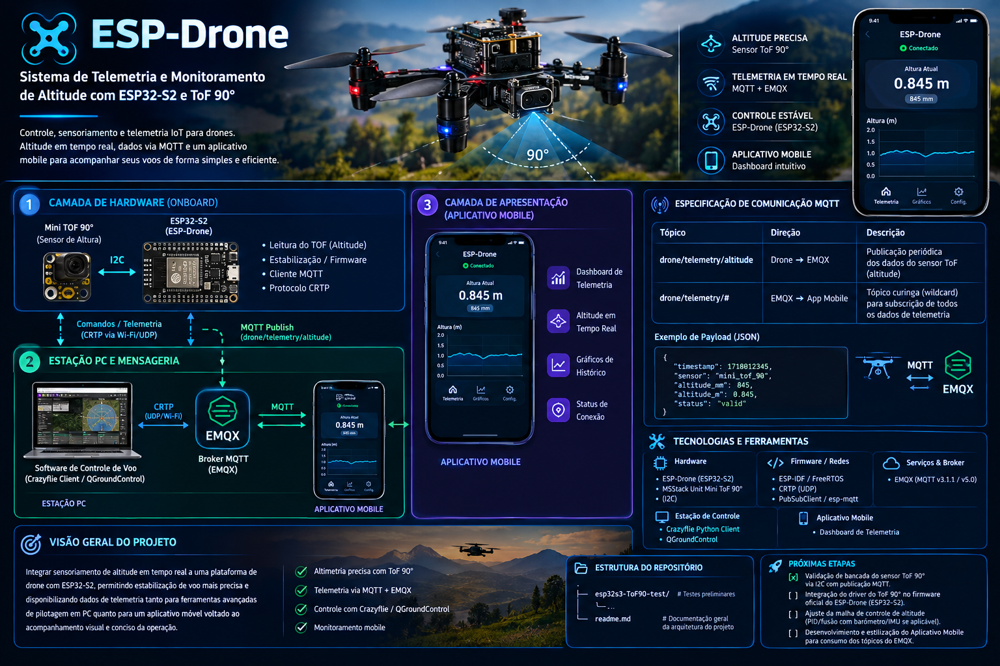

O objetivo principal deste projeto é integrar sensoriamento de altitude em tempo real a uma plataforma de drone com ESP32-S2, permitindo estabilização de voo mais precisa e disponibilizando dados de telemetria tanto para ferramentas avançadas de pilotagem em PC quanto para um aplicativo móvel voltado ao acompanhamento visual.
+-------------------------------------------------------------------------------+
| CAMADA DE HARDWARE |
| |
| +--------------------+ I2C +---------------------------------+ |
| | Mini TOF 90° | ------------> | ESP32-S2 (ESP-Drone) | |
| | (Sensor Altura) | | | |
| +--------------------+ | - Leitura do TOF (Altitude) | |
| | - Estabilização / Firmware | |
| | - Cliente MQTT & Protocolo CRTP | |
| +---------------------------------+ |
+---------------------------------------/----------------\----------------------+
/ \
Comandos / Telemetria / \ MQTT Publish
(CRTP via Wi-Fi/UDP) / \ (drone/telemetry/altitude)
/ \
+----------------------------------|--------------------------|------------------+
| v v |
| +-------------------+ +-------------------+ |
| | Software de | | EMQX | |
| | Controle de Voo | | (MQTT Broker) | |
| | (Crazyflie Client | | | |
| | / QGroundControl) | +---------|---------+ |
| +-------------------+ | |
| | |
| ESTAÇÃO PC | |
+-------------------------------------------------------------|------------------+
|
Wi-Fi / MQTT | Sub: drone/telemetry/#
v
+-------------------------------------------------------------------------------+
| CAMADA DE APRESENTAÇÃO |
| |
| +---------------------------------------+ |
| | Aplicativo Mobile | |
| | | |
| | - Dashboard de Telemetria | |
| | - Exibição de Altitude em Tempo Real | |
| | - Gráficos e Status de Conexão | |
| +---------------------------------------+ |
+-------------------------------------------------------------------------------+
+-----------------------+
| Bateria LiPo 1S |
| (3.7V / 300-600mAh) |
+-----------+-----------+
|
+------------------------------------+
| |
v v
+-----------------------+ +-----------------------+
| Regulador LDO | | Drivers / MOSFETs |
| (3.7V -> 3.3V) | | Motores do Drone |
+-----------+-----------+ +-----------+-----------+
| |
| (3.3V Estabilizado) | (Alimentação Direta)
v v
+-------------------------+ +------------------+
| ESP32-S2 (MCU Core) | | Motores M1 - M4 |
+------------+------------+ +------------------+
| Barramento I2C
v
+-------------------------+
| Mini TOF 90° |
| (Medição Altitude) |
+-------------------------+
+-----------------------------------+
| ESP32-S2 (ESP-Drone) |
| |
| [3V3] [GND] [GPIO8] [GPIO9] |
+---|-------|--------|--------|-----+
| | | |
| | SDA SCL
| | | |
+-------------------+ | | | |
| Mini TOF 90° | | | | |
| | | | | |
| [VCC] [GND] | <---+ | | |
| | | | | | |
| +------+-------|-------------+ | |
| | | |
| [SDA]------------|----------------------+ |
| [SCL]------------|-------------------------------+
| |
+-------------------+
| Tópico | Direção | Descrição |
|---|---|---|
drone/telemetry/altitude |
Drone ➔ EMQX | Publicação periódica dos dados do sensor ToF (altitude) |
drone/telemetry/# |
EMQX ➔ App Mobile | Tópico wildcard para subscrição de todos os dados |
{
"timestamp": 1718012345,
"sensor": "mini_tof_90",
"altitude_mm": 845,
"altitude_m": 0.845,
"status": "valid"
}